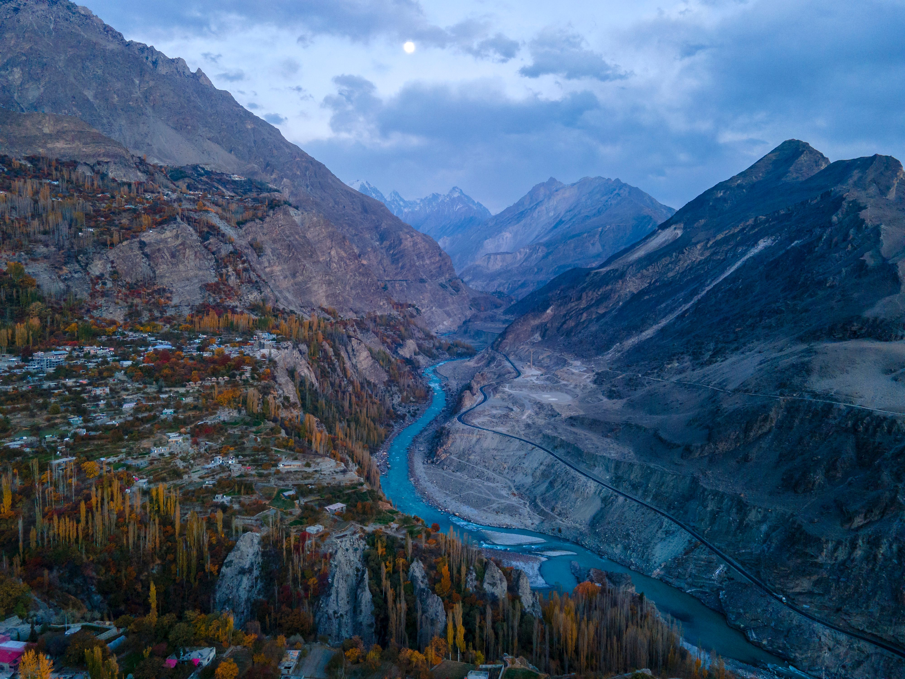
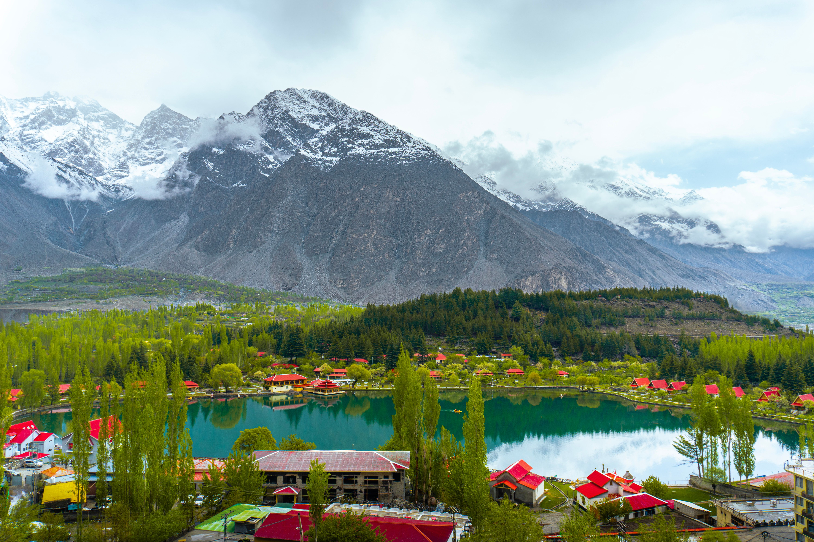
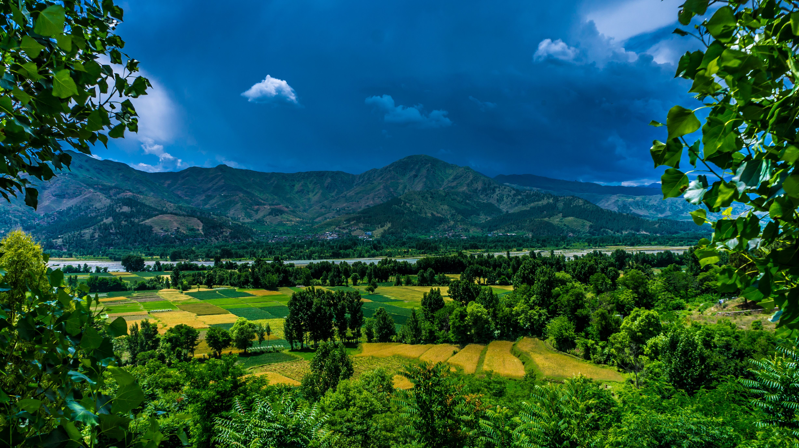

Pakistan is a country filled with breathtaking mountains, peaceful valleys, beautiful lakes, historical landmarks and diverse cultures. From the northern areas to the ancient cities, Pakistan offers many destinations for travelers and adventure lovers.
Pakistan offers a unique combination of natural beauty, history, culture, and adventure. Whether you enjoy exploring mountains, relaxing beside peaceful lakes, discovering historical places, or experiencing local traditions, there is something for every traveler.

Hunza Valley is one of the most beautiful destinations in northern Pakistan. Surrounded by majestic mountains, the valley is famous for its peaceful environment, scenic landscapes, historic forts, and traditional villages.

Skardu is a spectacular destination surrounded by mountains, lakes, valleys, and unique natural landscapes. It is an ideal destination for travelers who enjoy nature, adventure, and peaceful mountain scenery.

Swat Valley is known for its green mountains, beautiful rivers, peaceful valleys, and pleasant scenery. Its natural beauty makes it a popular destination for travelers looking for relaxation and adventure.